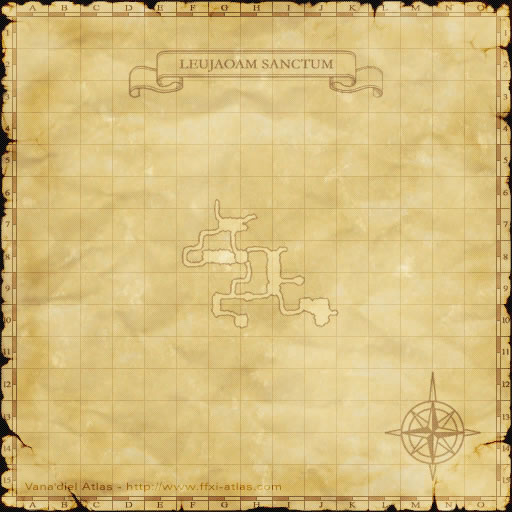
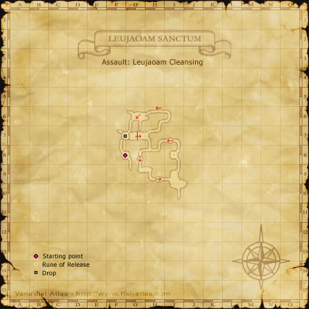
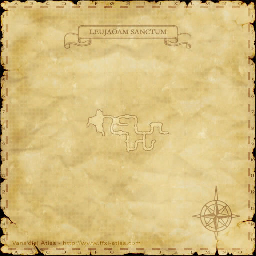

Description
Leujaoam Sanctum is a dungeon in Arrapago Islands.
Map

Maps


References
External references describe their own server or retail rules. Documented Zenith changes take precedence.
Map credits: Map 1 — HorizonXI Wiki · Map 2 — HorizonXI Wiki · Map 3 — HorizonXI Wiki · Map 4 — HorizonXI Wiki · Map 5 — HorizonXI Wiki · Map 6 — HorizonXI Wiki · Map 7 — HorizonXI Wiki · Map 8 — HorizonXI Wiki · Map 9 — HorizonXI Wiki · Map 10 — HorizonXI Wiki. Original game maps © SQUARE ENIX; redrawn maps retain the credited authorship and license.


Additional level-75 reference
|
The Leujaoam Sanctum is a mysterious network of caves undrneath the Caedarva Mire on the south-western side of the Arrapago Islands. The Leujaoam Sanctum is guarded by the Aht Urhgan forces at the Azouph Isle Staging Point and is home to several types of unique flaura and fauna. |
Maps
-
Leujaoam Cleansing
-
Orichalcum Survey
-
Escort Professor Chanoix
-
Shanarha Grass Conservation
-
Counting Sheep
-
Supplies Recovery
-
Azure Experiments
-
Imperial Code
-
Red Versus Blue


Connecting Areas
- Caedarva Mire: Azouph Isle Staging Point at (K-9)
Missions
Name Rank Recommended Level Party Size Points Objective Description Leujaoam Cleansing PSC 50 3-6 900:4 800:5 Remove all threats General Afkaam is to inspect Leujaoam Sanctum. Destroy all creatures in the area that may pose a threat to the general. Orichalcum Survey PFC 50 3-6 4000 Discover orichalcum ore There is a rumor that orichalcum ore has been discovered in Leujaoam Sanctum. Find the ore vein before the beastmen do. Escort Professor Chanoix SP 60 3-6 3000 Protect the professor A long-haired marid has been found frozen in the eternal ice of Leujaoam Sanctum. Escort Professor Clavauert B Chanoix to the site of the discovery. Shanarha Grass Conservation LC 50 3-6 Protect the vegetation. Rabbits are sending shanarha grass, unique to the Leujaoam Sanctum, to the verge of extinction. Drive away the rabbits and protect the vegetation. Counting Sheep C 60 3-6 Buy black sheep The Imperial Army on the eastern front is being hit by a peculiar cold wave, and warm uniforms are in short supply. Buy as many sheep as you can from the markets in Leujaoam and save the troops. Supplies Recovery S 70 3-6 Retrieve the Supplies A logistics unit headed to the front lines of the war with the Far East was attacked and their supplies were stolen. The enemy then fled toward Leujaoam Sanctum. An Immortals unit will also join in the recovery. Azure Experiments SM 70 3-6 Become a test subject The Imperial alchemists have developed various tissues to graft onto and strengthen the bodies of the Immortals, but they need test subjects for clinical experiments. Go lend your assistance. Imperial Code CS 70 3-6 Retrieve the OGMA The Empire's mercury cipher (OGMA) has been stolen by a group of Far Eastern spies. With it, out enemies will be able to decrypt top-secret military orders, thus severely compromising Imperial safety. You are to intercept the enemy as they transport the device. Red Versus Blue SL 70 3-6 ? Defeat Raubahn Joint battle exercises are to be carried out between the Immortals (blue) and the Inexorables (red). You have been assigned to assist the red team. The first side to defeat the leader of the other will be declared victor. Bloody Rondo FL 70 3-6 1500 (always) Defeat Count Dracula After years of quietly defying Imperial rule, the recluse Count Dracula has recently begun preparations for an assault on Al Zahbi. Infiltrate the Leujoam Sanctum, locate the count, and slay him before he can execute his plans.
Rewards
Item Assault Pts Item Assault Pts Item Assault Pts Item Assault Pts Stoic Earring 3,000 Unfettered Ring 5,000 Tempered Chain 8,000 Potent Belt 10,000 Miraculous Cape 10,000 Yigit Bulawa 15,000 Imperial Bhuj 15,000 Pahluwan Patas 15,000 Amir Kolluks 20,000 Pahluwan Qalansuwa 20,000 Yigit Seraweels 20,000
Adapted from Eden Wiki: Leujaoam Sanctum · Contributors and history · CC BY-SA 4.0. Revision 45745. Layout, links and optional background text adapted for Zenith.